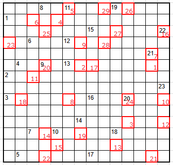

Men's Crossword 2019!

クロスワードを解いてから、赤い数字の小さい順に埋めた文字を読んでください。
カギ内の [ ] は、文字数を示しています。
解けたら、作者(
@men_cotton
)にお知らせください！
【縦のカギ】
1. SELECT * FROM users WHERE name = 'Bob'; [3]
4. 日本一JOI本選に生徒を送りだしたガチプロ部活 [5]
8. IOI2018のAW [4]
9. cout << "Hallo World!" << endl; [2]
10. 「縦12」で開催された、2018年最後のコンテストはこれの30回目 [3]
12. 国内最大の、定期的に競プロのコンテストを開催するサイト [7]
14. 2.0も3.0もある [3]
15. これの作者…にしようと思ったら、1マス足りなかったので「左遷」 [8]
18. こども・からかう [3]
19. 「縦12」で一番開催された回数が多い種類のコンテストにおける最高パフォーマンス [4]
20. 最大で何個の区間が重なっているかを調べるアルゴリズム [4]
21. 好き嫌いが激しいエディタ [3]
22. JMO (Japan Michimayoi Olympiad)を防ぐ [3]
23. ～3ではないほうのプログラミング言語 [7]
【横のカギ】
1.
https://bit.ly/2GNy7tB
[5]
2. 作者の弟が運営しているチャンネル [6]
3. Jung qvq lbh qb sbe guvf? [6]
5. 作者・「横6」が所属している部活 [4]
6. 「横11」の双子 「横5」内の「縦12」でのRateは1位 [10]
7. DPの説明としてよく取り上げられる袋たち [9]
11. 「横6」の双子 「縦4」内の「縦12」でのRateは1位 [7]
13. 「縦12」社の社長 作者が昨年12月にインタビューした [8]
16. 表紙に動物が書いてある技術書を発行しているところ [7]
17. unix-like reverse engineering framework [7]
21. 作者・「横6」・「横11」・「横13」が主に使っているエディタ [2]